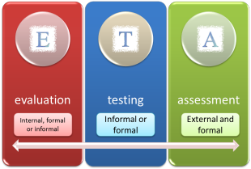
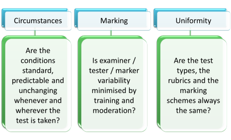
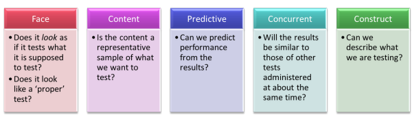

Testing, assessment and evaluation

Gentle warning: this is a complex area which is littered (some might say infested) with terminology. You may like to take it a bit at a time.
The changing face of testing: a little history |
Over the years, what we test and how we test it in our profession have seen great changes. Here are three citations that show how.
- The more ambitious we are in
testing the communicative competence of a learner, the more
administratively costly, subjective and unreliable the results are.
(Corder, 1973: 364) - The measurement of communicative proficiency is a job worth doing,
and the task is ultimately as feasible one.
(Morrow, in Alderson JC, Hughes, A (Eds.), 1979: 14) - It is assumed in this book that it is usually communicative ability
which we want to test.
(Hughes, 1989: 19)
In what follows, it is not assumed that it is always communicative ability which we want to test but that's usually the case and definitely the way to bet.
 |
Defining terms |
Why the triple title? Why testing and assessment and evaluation? Well, the terms are different and they mean different things to different people.
If you ask Google to define 'assess', it returns "evaluate
or estimate the nature, ability, or quality of".
If you then ask it to define 'evaluate', it returns "form
an idea of the amount, number, or value of; assess".
The meaning of the verbs is, therefore, pretty much the same but they
are used in English Language Teaching in subtly different ways.
When we are talking about giving people a test and recording scores etc.,
we would normally refer to this as an assessment procedure.
If, on
the other hand, we are talking about looking back over a course or a
lesson and deciding what went well, what was learnt and how people
responded, we would prefer the term 'evaluate' as it seems to describe a
wider variety of data input (testing, but also talking to people and
recording impressions and so on). Evaluation doesn't have to be very elaborate.
The term could be used to describe nodding to accept an answer in class up to formal examinations
set by international testing bodies but at that end of the cline, we are
more likely to talk about assessment and examining.
Another difference in use is that when we measure success for ourselves (as in teaching a lesson) we are conducting evaluation; when someone else does it, it's called assessment.
In what follows, therefore, the terms are used to mean the same thing but the choice of which term to use will be made to be appropriate to what we are discussing.
How about 'testing'? In this guide 'testing' is seen as a form of assessment but, as we shall see, testing comes in all shapes and sizes. Look at it this way:
|  | As you see, testing sits uncomfortably between
evaluation and assessment. If testing is informal and
classroom based, it forms part of evaluation. A bi-weekly
progress test is part of evaluation although learners may see it
as assessment. When testing is formal and externally
administered, it's usually called examining. Testing can be anything in between. For example, an institution's end-of-course test is formal testing (not examining) and a concept-check question to see if a learner has grasped a point is informal testing and part of evaluating the learning process in a lesson. Try a short matching test on this area. It doesn't matter too much if you have all the answers right. |
Why evaluate, assess or test? |
It's not enough to be clear about what you want people to learn and
to design a teaching programme to achieve the objectives. We must
also have some way of knowing whether the objectives have been achieved.
That's called testing.
If you can't measure it, you can't improve
it
Peter Drucker
 |
Types of evaluation, assessment and testing |
We need to get this clear before we can look at the area in any detail.
- Initial vs. Formative vs. Summative evaluation
- Initial testing is often one of two things in ELT: a diagnostic test to
help formulate a syllabus and course plan or a placement test to put
learners into the right class for their level.
Formative testing is used to enhance and adapt the learning programme. Such tests help both teachers and learners to see what has been learned and how well and to help set targets. It has been called educational testing. Formative evaluation may refer to adjusting the programme or helping people see where they are. In other words, it may targeted at teaching or learning (or both).
Summative tests, on the other hand, seek to measure how well a set of learning objectives has been achieved at the end of a period of instruction.
Robert Stake describes the difference this way: When the cook tastes the soup, that's formative. When the guests taste the soup, that's summative. (cited in Scrivener, 1991:169).
There is more on the distinctions and arguments surrounding formative and summative testing below. - Informal vs. Formal evaluation
- Formal evaluation usually implies some kind of written document
(although it may be an oral test) and some kind of scoring system.
It could be a written test, an interview, an on-line test, a piece of
homework or a number of other things.
Informal evaluation may include some kind of document but there's unlikely to be a scoring system as such and evaluation might include, for example, simply observing the learner(s), listening to them and responding, giving them checklists, peer- and self-evaluation and a number of other procedures. - Objective vs. Subjective assessment
- Objective assessment (or, more usually, testing) is
characterised by tasks in which there is only one right answer.
It may be a multiple-choice test, a True/False test or any other
kind of test where the result can readily be seen and is not subject
to the marker's judgement.
Subjective tests are those in which questions are open ended and the marker's judgement is important.
Of course, there are various levels of test on the subjective-objective scale. - Criterion-referencing vs. Norm-referencing in tests
- Criterion-referenced tests are those in which the result is
measured against a scale (e.g., by grades from A to E or by a score
out of 100). The object is to judge how well someone did
against a set of objective criteria independently of any other
factors. A good example is a driving test.
Norm-referencing is a way of measuring students against each other. For example, if 10% of a class are going to enter the next class up, a norm-referenced test will not judge how well they achieved a task in a test but how well they did against the other students in the group. Some universities apply norm-referencing tests to select undergraduates.
There's a matching exercise to help you see if you have understood this section. Click here to do it.
Testing – what makes a good test? |
You teach a child to read, and he or
her will be able to pass a literacy test.
George W. Bush
The first thing to get clear is the distinction between testing and
examining.
Complete the gaps in following in your head and then click on the table
to see what answers you get.

One more term (sorry):
The term 'backwash' or, sometimes, 'washback', is used to describe the
effect on teaching that knowledge of the format of a test or examination
has. For example, if we are preparing people for a particular style of
examination, some (perhaps nearly all) of the teaching will be focused
on training learners to perform well in that test format.
 |
Formative vs. summative testing |
In recent years in mainstream education in the UK especially but
also elsewhere, the role of formative assessment has been
investigated at some length and the findings appear to show that
formative assessment wins hands down.
The arguments rests on two connected contrasts between summative and
formative assessment:
- Traditional school-based assessment programmes are generally
summative insofar as they attempt to ascertain accurate
information about the attainment (or not) of educational goals.
Normally, such assessment occurs after a period of teaching
(which may be as much as a school year or even longer) and
involves assigning grades to the individuals' performance.
Almost all mainstream educational institutions carry out formal, summative assessment on a regular basis.
Formative assessment, on the other hand, occurs throughout the teaching programme at any time when information needs to be gathered and that information is not used to assign grades but to supply both the learners and the teachers (and the institution) with evidence about how learning is developing (not where it has got to).
The evidence is then used by all parties to see how the teaching and learning activities and content need to be adjusted to reach the goals of the curriculum.
The outcome of this form of assessment should be to allow teachers and institutions to adjust their programmes and behaviours but also, crucially, to allow the learners to adjust their behaviour and working practices, too. - Summative assessment emphasises grades and reports on
success or failure. It is, frequently, a demotivating and
unhappy experience for many.
Formative assessment focuses on learning and promoting motivation to learn because it emphasises achievement rather than failure. For this reasons, it is sometimes dubbed AfL (Assessment for Learning).
There are important implications for all teaching and learning settings in this because the claims made for the advantages of formative over summative assessment are quite grand. It is averred that formative assessment:
- makes teaching more effective because it provides data in an ongoing way on which the teacher can act and to which the learners can react
- has a positive effect on achievement because goals are set rationally and realistically and are achievable in small steps
- empowers learners and encourages them to take more responsibility for their own learning and progress
- acts as a corrective to prevent misunderstandings of what is required because feedback on learning success is specific and targeted (unlike a grade on an examination certificate)
- is cooperative because learners can involve each other in assessing their own progress
- encourages autonomy because learners can acquire the skills of self-assessment which can be transferred to other settings
 |
Types of tests |
There are lots of these but the major categories are
| Test types | What the tests are intended to do | Example |
| aptitude tests | test a learner’s general ability to learn a language rather than the ability to use a particular language | The Modern Language Aptitude Test (US Army) and its successors |
| achievement tests | measure students' performance at the end of a period of study to evaluate the effectiveness of the programme | an end-of-course or end-of-week etc. test (even a mid-lesson test) |
| diagnostic tests | discover learners' strengths and weaknesses for planning purposes | a test set early in a programme to plan the syllabus |
| proficiency tests | test a learner’s ability in the language regardless of any course they may have taken | public examinations such as FCE etc. but also placement tests |
| barrier tests | a special type of test designed to discover if someone is ready to take a course | a pre-course test which assesses the learner's current level with respect to the intended course content |
As far as day-to-day classroom use is concerned, teachers are mostly involved in writing and administering achievement tests as a way of telling them and the learners how successfully what has been taught has been learned.
 |
Types of test items |
Here, again, are some definitions of the terminology you need to think or write about testing.
- alternate response
- This sort of item is probably most familiar to language teachers as a True / False test. (Technically, only two possibilities are allowed. If you have a True / False / Don't know test, then it's really a multiple-choice test.)
- multiple-choice
- This is sometimes called a fixed-response test. Typically, the correct answer must be chosen from three or four alternatives. The 'wrong' items are called the distractors.
- structured response
- In tests of this sort, the subject is given a structure in which to form the answer. Sentence completion items of the sort which require the subject to expand a sentence such as He / come/ my house / yesterday / 9 o'clock into He came to my house at 9 o'clock yesterday are tests of this sort as are writing tests in which the test-taker is constrained to include a list of items in the response.
- free response
- In these tests, no guidance is given other than the rubric and the subjects are free to write or say what they like. A hybrid form of this and a structured response item is one where the subject is given a list of things to include in the response but that is usually called a structured response test, especially when the list of things to include covers most of the writing and little is left to the test-taker's imagination.
 |
Ways of testing and marking |
Just as there are ways to design test items and purposes for testing (see above), there are ways to test in general. Here are the most important ones.
| Methodology | Description | Example | Comments |
| direct testing | testing a particular skill by getting the student to perform that skill | testing whether someone can write a discursive essay by asking them to write one | The argument is that this kind of test is more reliable because it tests the outcomes, not just the individual skills and knowledge that the test-taker needs to deploy |
| indirect testing | trying to test the abilities which underlie the skills we are interested in | testing whether someone can write a discursive essay by testing their ability to use contrastive markers, modality, hedging etc. | Although this kind of test is less reliable in testing whether the individual skills can be combined, it is easier to mark objectively |
| discrete-point testing | a test format with many items requiring short answers which each target a defined area | placement tests are usually of this sort with multiple-choice items focused on vocabulary, grammar, functional language etc. | These sorts of tests can be very objectively marked and need no judgement on the part of the markers |
| integrative testing | combining many language elements to do the task | public examinations contain a good deal of this sort of testing with marks awarded for various elements: accuracy, range, communicative success etc. | Although the task is integrative, the marking scheme is designed to make the marking non-judgemental by breaking down the assessment into discrete parts |
| subjective marking | the marks awarded depend on someone’s opinion or judgement | marking an essay on the basis of how well you think it achieved the task | Subjective marking has the great disadvantage of requiring markers to be very carefully monitored and standardised to ensure that they all apply the same strictness of judgement consistently |
| objective marking | marking where only one answer is possible – right or wrong | machine marking a multiple-choice test completed by filling in a machine-readable mark sheet | This obviously makes the marking very reliable but it is not always easy to break language knowledge and skills down into digital, right-wrong elements. |
| analytic marking | the separate marking of the constituent parts that make up the overall performance | breaking down a task into parts and marking each bit separately (see integrative testing, above) | This is very similar to integrative testing but care has to be taken to ensure that the breakdown is really into equivalent and usefully targeted areas |
| holistic marking | different activities are included in the overall description to produce a multi-activity scale | marking an essay on the basis of how well it achieves its aims (see subjective marking, above) | The term holistic refers to seeing the whole picture and such test marking means that it has the same drawbacks as subjective marking, requiring monitoring and standardisation of markers. |
Naturally, these types of testing and marking can be combined in any assessment procedure and often are.
For example, a piece of writing in answer to a structured response test item can be marked by awarding points for mentioning each required element (objective) and then given more points for overall effect on the reader (subjective).
 |
Three fundamental concepts:
|
- Reliability
This refers, oddly, to how reliable the test is. It answers this question:
Would a candidate get the same result whether they took the test in London or Kuala Lumpur or if they took it on Monday or Tuesday?
This is sometimes referred to as the test-retest test. A reliable test is one which will produce the same result if it is administered again. Statisticians reading this will immediately understand that it is the correlation between the two test results that measures reliability. - Validity
Two questions here:- Does the test measure what we say it measures?
For example, if we set out to test someone's ability to participate in informal spoken transactions, do the test items we use actually test that ability or something else? - Does the test contain a relevant and representative sample
of what it is testing?
For example, if we are testing someone's ability to write a formal email, are we getting them to deploy the sorts of language they actually need to do that?
- Does the test measure what we say it measures?
- Practicality
Is the test deliverable in practice? Does it take hours to do and hours to mark or is it quite reasonable in this regard?
For examining bodies, the most important criteria are practicality
and reliability. They want their examinations to be trustworthy and easy
(and cheap)
to administer and mark.
For classroom test makers, the overriding criterion is validity.
We want a test to test what we think it tests and we aren't interested
in getting people to do it twice or making it (very) easy to mark.
There's a matching test to help you see if you have understood this section. Click here to do it.
So:
- How can we make a test reliable?
- How can we make a test valid?
Reliability |
If you have been asked to write a placement test or an end-of-course
test that will be used again and again, you need to consider reliability
very carefully. There's no use having, e.g., an end-of-course test which
produces wildly different results every time you administer it and if a
placement test did that, most of your learners would end up in the wrong
class.
To make a test more reliable, we need to consider two things:
- Make the candidates’ performance as consistent as possible.
- Make the scoring as consistent as possible.
How would you do this? Think for a minute and then click here.

- Circumstances
- you can't always control this but we need to make an effort to see that things like noise levels, room temperature, level of distraction etc. are kept stable.
- Marking
- the more subjectively marked a test is (e.g., an interview to assess oral, communicative competence), the more carefully we have to standardise markers. The fewer markers you have, the easier it is to do this. If you mark subjectively, try to ensure at least double marking of most work.
- Uniformity
- if you have parallel versions of the same test, are they really parallel?
- Quantity
- the more evidence you have, the more reliable will be the
judgement. That's why chess matches, football competitions,
shooting events and so on do not rely on a single game or attempt.
The aim is to gather more than a one-off piece of data. The
key here is ensuring coverage. The longer a test is, the more
areas you can cover.
The down side, of course, is that the longer a test is, the longer it takes to mark and the more tired and dispirited the test-takers may become. - Constraints
- the more freedom you give test subjects to produce language, the
more able they are to avoid using structures and language they are
unsure of. In other words, free tasks are error avoiding but
controlled tasks allow you more reliably to gauge whether the targets
can be successfully achieved.
Compare, for example:
Write 500 words about how to improve your school.
with
Write 500 words about how to improve your school focusing on facilities, teaching, sports equipment and technology. Suggest at least one improvement in each area.
The second is a structured response test and the rubric forces the test subjects to produce language in specific areas but the first is a free response test and allows them to avoid anything they are not sure about. - Make rubrics clear
- Any misunderstanding of what's required undermines reliability.
Learners vary in their familiarity with certain types of task and some may, for example, instantly recognise what they need to do from a glance at the task. Others may need more explicit direction and even teaching. Making the rubric clear contributes to levelling the playing field.
 |
Validity |
If you are writing a test for your own class or an individual learner
or group of students for whom you want to plan a course, or see how a
course is going, then validity
is most important for you. You will only be running the test once
and it isn't important that the results are correlated to other tests.
All you want to ensure is that the test is testing what you think it's
testing so the results will be meaningful.
There are five different sorts of validity to consider. Here they
are:

To explain:
- Face validity
- Students won't perform at their best in a test they don't trust is
really assessing properly what they can do. For example, a
quick chat in a corridor may tell you lots about a learner's
communicative ability but the learner won't feel he/she has
been fairly assessed (or assessed at all).
The environment matters, too. Most learners expect a test to be quite a formal event held in silence with no cooperation between test-takers. If the test is not conducted in this way, some learners may not take it as seriously as others and perform less well than they are able to in other environments. - Content validity
- If you are planning a course to prepare students for a
particular examination, for example, you want your test to represent the
sorts of things you need to teach to help them succeed.
A test which is intended to measure achievement at the end of a course also needs to contain that which has been taught only and not have any extraneous material which has not been the focus of teaching.
Coverage plays a role here, too, because the more that has been taught, the longer and more comprehensive the test has to be. - Predictive validity
- Equally, your test should tell you how well your
learners will perform in the tasks you set and the lessons you design to help them prepare for the
examination.
For example, if you want to construct a barrier test to see if people are able successfully to follow a course leading to an examination, you will want the test to have good predictive validity. This is not easy to achieve because, until at least one cohort of learners have taken the examination, you cannot know how well the barrier test has worked. Worse, you need to administer the barrier test to a wide range of learners and compare the results of the test with the examination results they actually achieved. This will mean that the barrier test cannot be used to screen out learners until it has been shown to have good predictive validity so the endeavour may take months to come to fruition. - Concurrent validity
- If, for example, you have a well established proficiency test,
such as one administered by experienced examination boards, you may
feel that you would be better served with a shorter test that gave
you the same sort of data.
To establish concurrent validity, you need to administer both tests to as large a group as possible and then carefully compare the results. Parallel results are a sign of good concurrent validity and you may be able to dispense with the longer test altogether.
This may be less important to you but if your test predicts well how learners perform in the examination proper, it will tell you more than if it doesn't. - Construct validity
- A construct is something that happen in your brain and is not,
here, to do with constructing a test.
To have high construct validity a test-maker must be able succinctly and consistently to answer the question:
What exactly are you testing?
If you cannot closely and accurately describe what you are testing, you will not be able to construct a good test.
It is not enough to answer with something like:
I am testing writing ability.
because that begs more questions:
At what level?
Concerning what topics?
For which audiences?
In what style?
In what register?
In what length of text?
and so on.
The better able the test designer is to pre-empt those questions by having well-thought-through answers to hand, the higher the level of construct validity the test will have.
 |
Fresh starts |
This gets a section to itself, not because it is at the same level of importance but because it affects both reliability and validity.
If test items are cumulative, the test-takers performance will depend in Task X on how well they achieved Task X-1. In other words, for example, a test which requires a learner to give answers showing comprehension of a reading or listening text and then uses those texts again to test discrete vocabulary items will not be:
- Very reliable because the test-taker may have got lucky and encountered a text with which they were particularly familiar or which happened to contain lexis they knew (among lots they did not know).
- Very valid because the response to the second task will depend on the response to the first task so we do not know if we are measuring the ability we want to test or the ability we have already tested.
For these reasons, good tests are usually designed so that each item constitutes a fresh start and no test-taker is advantaged by happening to have got lucky with one task that targets something they are particularly good at.
 |
Discrimination |
In the world of testing, discrimination is not always a bad
thing.
Here, it refers to the ability which a test has to distinguish
clearly and quite finely between different levels of learner.
If a test is too simple, most of the learners in a group will get
most of it right which is good for boosting morale but poor if you
want to know who is best and worst at certain tasks.
Equally, if a test is too difficult, most of the tasks will be
poorly achieved and your ability to discriminate between the
learners' abilities in any area will be compromised.
Ideally, all tests should include tasks which will only be fully achieved by the best in a group and allow you to see from the results who they are. The item you include to do this will be called a discriminator.
Overall, the test has to be targeted at the level of the cohort of students for which it is intended allowing no items which are too easy and none which are undoable by the majority.
Finally, having considered all this, you need to construct your test. How would you go about that?
Think for a
moment and make a few notes and then click here.

Easy.
| Related guides | |
| assessing Listening Skills | these guides assume an understanding of the principles and focus on skills testing |
| assessing Reading Skills | |
| assessing Speaking Skills | |
| assessing Writing Skills | |
| assessing Vocabulary | |
| assessing Grammar | |
| testing terminology | for a list of the most common terms used in this area and a link to test for you |
| placement testing | this is a guide in the Academic Management section concerned with how to place learners in appropriate groups and contains a link to an example 100-item placement test |
| Bloom's taxonomy | this is a way of classifying the cognitive demands that types of test items place on learners |
Of course, there's a test on all of this: some informal, summative evaluation for you.
Cambridge Delta
If you preparing for Delta Module One, part of the free course
for that contains
a guide to applying the concepts to the examination question
(Paper 2, Task 1).
If you are preparing for Delta Module Three, there's
a guide to how to apply all this.
References:
Alderson JC, Hughes, A (Eds.), British Council, ELT Documents 111, Issues
in Language Testing, available from
http://wp.lancs.ac.uk/ltrg/files/2014/05/ILT1981_CommunicativeLanguageTesting.pdf
[accessed October 2014]
Corder, S. P, 1973, Introducing Applied Linguistics, London :
Penguin.
Black, P and Wiliam, D, 2006, Inside The Black Box: Raising
Standards Through Classroom Assessment, Granada Learning
Hughes, A, 1989, Testing for Language Teachers, Cambridge: Cambridge
University Press
Oxford Dictionaries https://languages.oup.com/
Scrivener, M, 1991, Evaluation thesaurus, 4th edition, Newbury Park, CA: Sage
Publications
General references for testing and assessment.
You may find some of the following useful. The text (above) by Hughes
is particular clear and accessible:
Alderson, J. C, 2000,
Assessing Reading, Cambridge: Cambridge University Press
Carr, N, 2011, Designing and Analyzing Language Tests: A Hands-on Introduction to
Language Testing Theory and Practice, Oxford: Oxford University
Press
Douglas, D, 2000,
Assessing Languages for Specific Purposes. Cambridge: Cambridge University Press
Fulcher, G, 2010, Practical Language Testing, London: Hodder Education
Harris, M & McCann, P, 1994, Assessment, London: Macmillan Heinemann
Heaton, JB, 1990, Classroom Testing, Harlow: Longman
Martyniuk, W, 2010,
Aligning Tests with the CEFR, Cambridge: Cambridge University Press
McNamara, T, 2000, Language Testing, Oxford: Oxford University Press
Rea-Dickins, P & Germaine, K, 1992, Evaluation, Oxford: Oxford University Press
Underhill, N, 1987,
Testing Spoken Language: A Handbook of Oral Testing Techniques,
Cambridge: Cambridge University Press